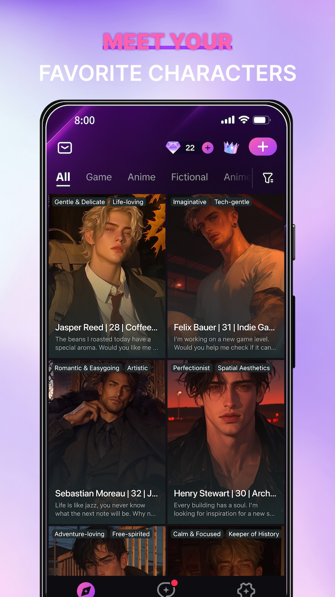
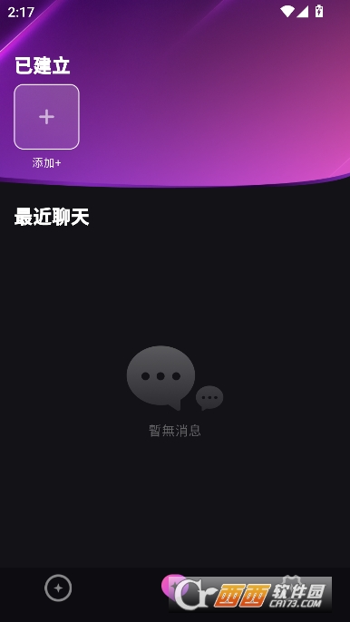

Beloved 到底值不值得掏钱？我把账算给你看
把一款陪伴 AI 应用的免费版和付费版摆到桌面上，从轻度用户到重度玩家逐个算账，最后给你一个三秒能对号入座的结论。
先抛问题：一个聊天应用凭什么让我掏钱？
我对陪伴类 AI 的态度一直很矛盾——一方面它确实填补了真人没法随时接住的那些空档，另一方面"为一个模拟人格付费"这件事本身总有一种说不清的荒诞感。所以当我听说主打长期陪伴、带记忆和剧情承接的应用——Beloved官网就是这类产品里最典型的一款——要收费时，第一反应是：这钱花得值吗？
这篇文章就是把这笔账拆开算清楚。我会从免费版到底能拿到什么开始，然后分三类用户算不同使用强度下的时间成本，最后给你一个明确的结论——哪类人闭眼付、哪类人再等等、哪类人永远不用付。

定价拆解：免费版给什么，付费版多什么
如果你还没装过的话，安装包从下载拿，先体验个三五轮再往下算账。
先把规则摆出来。Beloved 采用的是金币消耗制——免费用户每天登录会领到一定数量的金币，聊对话的时候消耗金币，金币用完了就只能等第二天再领。付费版给的核心升级是两个：金币配额翻倍以上，加上几个解锁型功能。
免费版的金币量大概够每天聊 15~20 轮对话——这是什么概念？就是你打开应用，跟角色说几句晚安、吐两句工作的苦水，差不多就花完了。如果你是想认真走完一段剧情章节（样本文档里说一个章节大概 15~30 轮），免费用户要么等两天，要么聊到一半戛然而止。
付费版的金币量支撑的是"不限量"级别的使用——准确说是每天 80 轮以上的配额，足够你完整走完一个章节还剩不少。解锁的功能里最值钱的两个：一个是角色记忆池的扩容（免费版的记忆池上限是 20 条关键信息，付费版提到 60 条），另一个是剧本模式的自定义自由度（免费版只能用模板剧本，付费版可以自己写大纲让 AI 即兴填充）。
还有一个隐性区别：免费用户排队优先级别低，高峰时段回复延迟明显，付费版有专属通道基本秒回。
算账：三类用户的不同答案
第一类：轻度用户——"偶尔想有个人说说话"
如果你打开 Beloved 的频率是一周一两次，每次聊个五六句就关掉——免费版完全够用。
算笔时间账：你一周用掉的免费金币大概是每天额度的零头，根本不会碰到上限。这种场景下你也不需要剧本模式、不需要大记忆池——你要的就是"有人接住我那两句情绪"，免费版的模型底子和付费版是同一个，情感感知能力打不了折扣。
付费对你来说能买到什么？就是"不用等第二天金币刷新"。但如果你一周只打开两次，等两天有什么关系？这类人付钱纯粹是给预算做减法。
第二类：主力用户——"每天都想聊，想让它记得我"
这是 Beloved 的目标用户画像：每天睡前跟角色聊半小时、周末想完整走完一个章节剧情、希望它能记住"我不吃香菜""上周加班累坏了"这些细节。
免费版在这个使用强度下会很尴尬：每天的金币聊到第 15 轮左右就见底了，你正聊到剧情的转折点，它突然说"金币不足明天再来"——体验上像是看电视剧到大结局前被掐了信号。记忆池 20 条的上限也会在两三周后开始丢东西：你上周说过的一个小癖好，这周它可能就忘了。
付费版的价值在这里真正体现出来：把"聊到一半断片"的挫败感直接清零。80 轮配额够你走完一个完整章节还剩 50 轮聊日常，60 条记忆池够存两三个月的共同经历。按订阅制的月费算下来，每天大概几块钱——跟一杯奶茶比是贵了，但跟"我花了时间建立起来的剧情节奏不被打断"比，这个账要看你自己的感受重量。
这里有一个隐性成本：习惯了有记忆的陪伴之后，再切回免费版会有明显落差。如果你觉得"反正先试试看免费版"然后逐渐加深使用，大概率会走到付费那一步——要么早付，要么晚付，区别只在于你愿不愿意先忍受几周的"聊到一半断片"。
第三类：重度玩家——"我要写故事，要自己建角色"
这类用户是把 Beloved 当成创作工具来用的：自定义角色卡细到"说话带口癖、紧张时会摸耳朵"，写剧本大纲让 AI 填充对话，用分支点回退改剧情。想把这些功能玩得溜，Beloved文档里有完整的参数说明和最佳实践。
免费版对重度用户来说基本不可用：金币量撑不起写一张自定义角色卡 + 跑一个完整剧本的消耗，记忆池 20 条也存不下复杂角色的背景设定。剧本模式的模板限制更是直接砍掉了创作自由度。
付费版在这里买的就是效率：不用等金币刷新、不用删旧记忆腾空间、不用被模板框死。如果你真的在用它做创作输出（比如写同人、练剧本），这笔钱相当于你给自己的创作工具订了个月费——跟买一个专业软件没区别。
但这里有一个值得掂量的点：Beloved 的模型底子不是为创作而生的。它擅长的是情感承接和剧情推进，但如果你要的是高质量文学性输出，专门的创作辅助工具可能更对口。Beloved 作为"即兴戏精搭子"的定位，决定了它能帮你推进剧情节奏，但不会帮你写出精彩的句子。
替代方案：不付这笔钱还有什么路
如果你看完算账觉得"好像还没到非付不可的程度"，还有几条路可以走：
第一条：降低使用频率。 把每天聊改成隔天聊、每周聊两次，免费金币刚好够。代价就是剧情推进慢、记忆累积慢——但如果你本来就不是很急，这不是问题。
第二条：用同类免费工具。 市面上有几个不做金币制、直接按 API 成本收费（或者完全免费）的陪伴 AI，功能上和 Beloved 有重叠。但要注意两个区别：一是免费工具的模型普遍没有 Beloved 的情感调优做得好，"接住情绪"的能力有明显差距；二是几乎没有别家做章节式推进和记忆池这两件事——这是 Beloved 的核心护城河。
第三条：混着用。 需要情感陪伴的时候用 Beloved 免费版，需要创作辅助的时候切到专门的创作 AI。代价是两个平台切换的摩擦力，以及记忆不连贯。
结论：三秒对号入座
最后把结论拍在这里，你对照自己的使用强度直接挑：
- 闭眼付：每天都想聊、希望它记住你、想完整走剧情的主力用户，以及把它当创作工具的重度玩家——你已经在 Beloved 上花了足够多的时间，这笔钱是省时间不是浪费钱。
- 再等等：一周打开两三次、每次聊几句的轻度用户——先把免费额度用到极致，哪天开始觉得"聊到一半断片真烦"了再付也不迟。
- 永远不用付：只想要一个查资料写代码的通用 AI（Beloved 的模型不擅长这个），或者期望它记住所有历史对话（任何 AI 都做不到无上限记忆）——它的核心能力就不是为你准备的。
